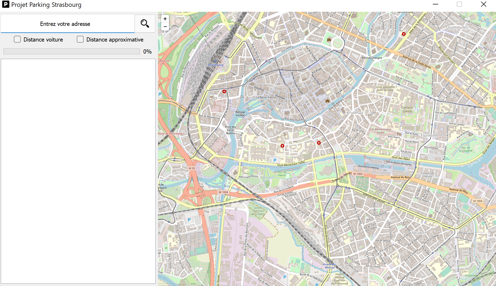
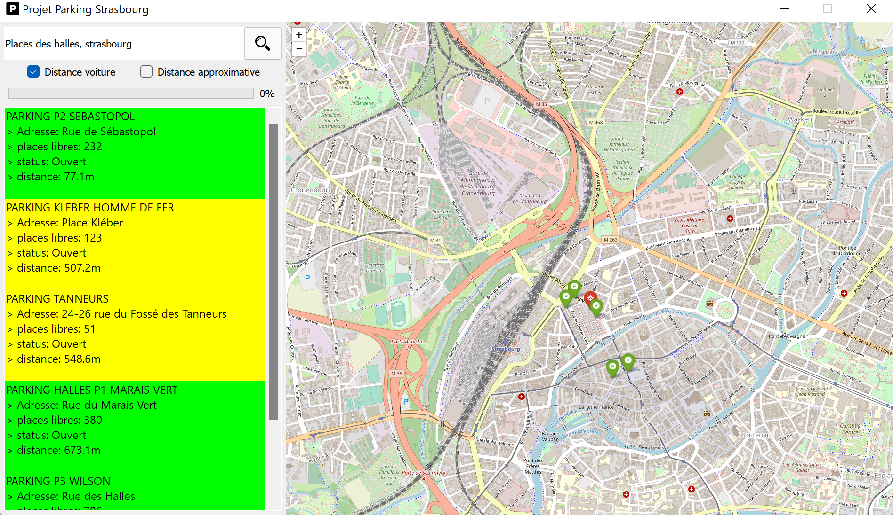

Stras Park'
Description:
Le projet est simple, vous souhaitez vous rendre quelque part à Strasbourg et vous cherchez à trouver les parkings les plus proches de votre destination ainsi que le nombre de places disponibles dans chacun d'entre eux.Utilisation:
- Téléchargez l'interface graphique
- Lancez le programme
- Entrez l'adresse de destination
- Choisissez entre distance à pied et distance en voiture
- L'application vous affiche la liste des parkings les plus proches ainsi qu'une carte interactive
Informations utiles:
Les couleurs correspondent à :- Vert : le nombre de places libres est supérieur à 30% du nombre total de places
- Jaune : le nombre de places libres est inférieur à 30% du nombre total de places
- Rouge : le parking est complet, est fermé, où les informations en temps réel sont indisponibles
- Gris : les informations sont indisponibles
Images:
Page de démarrage de l'application:
Resultat de la recherche:
Téléchargement:
Installation de l'interface
1) Téléchargez l'interface
- Interface
2) Mettez vos fichiers dans un même dossier
Installation des prérequis
- Requests
- PyQt5
- PyQtWebEngine
- folium
- Urllib3
pip install requests pyqt5 pyqtwebengine folium urllib3
ou installez les modules en utilisant le fichier "requirement.txt"
pip install -r requirements.txt
Utilisation:
Il vous suffit maintenant de lancer le programme de la façon de votre choix.